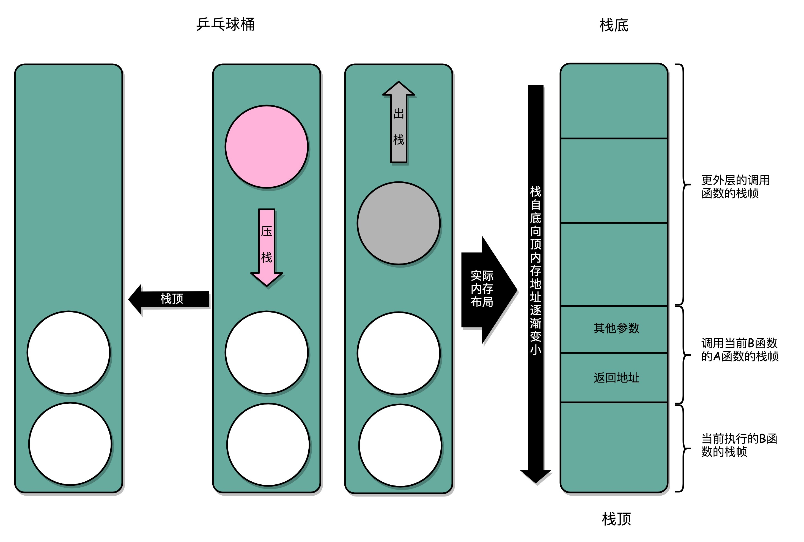
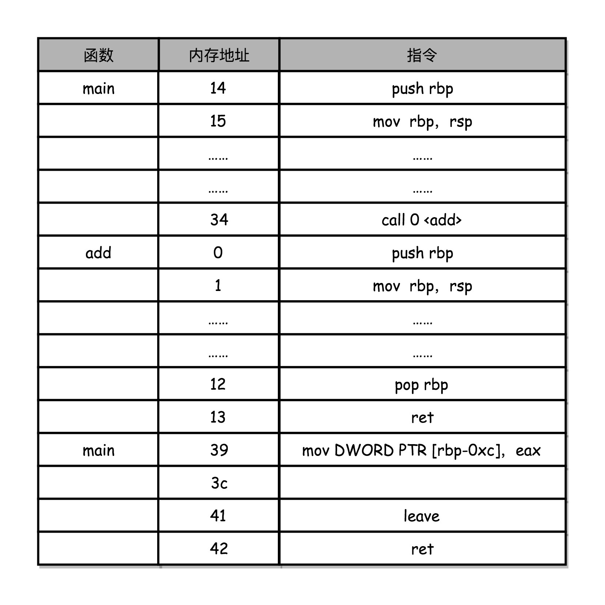
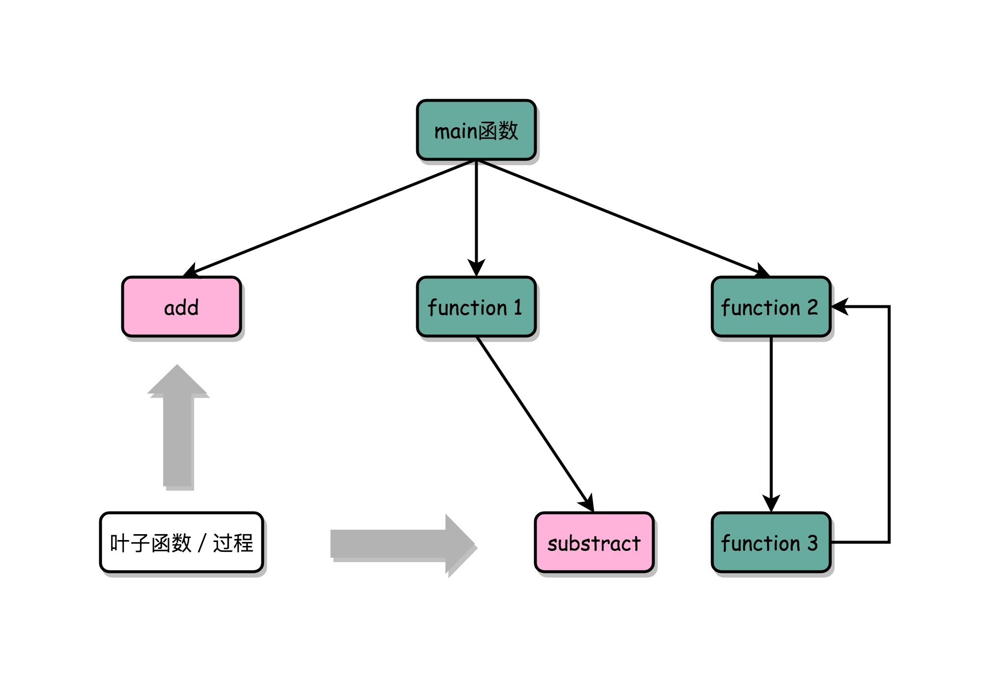

- 00 开篇词 为什么你需要学习计算机组成原理？.md.html
- 01 冯·诺依曼体系结构：计算机组成的金字塔.md.html
- 02 给你一张知识地图，计算机组成原理应该这么学.md.html
- 03 通过你的CPU主频，我们来谈谈“性能”究竟是什么？.md.html
- 04 穿越功耗墙，我们该从哪些方面提升“性能”？.md.html
- 05 计算机指令：让我们试试用纸带编程.md.html
- 06 指令跳转：原来if...else就是goto.md.html
- 07 函数调用：为什么会发生stack overflow？.md.html
- 08 ELF和静态链接：为什么程序无法同时在Linux和Windows下运行？.md.html
- 09 程序装载：“640K内存”真的不够用么？.md.html
- 10 动态链接：程序内部的“共享单车”.md.html
- 11 二进制编码：“手持两把锟斤拷，口中疾呼烫烫烫”？.md.html
- 12 理解电路：从电报机到门电路，我们如何做到“千里传信”？.md.html
- 13 加法器：如何像搭乐高一样搭电路（上）？.md.html
- 14 乘法器：如何像搭乐高一样搭电路（下）？.md.html
- 15 浮点数和定点数（上）：怎么用有限的Bit表示尽可能多的信息？.md.html
- 16 浮点数和定点数（下）：深入理解浮点数到底有什么用？.md.html
- 17 建立数据通路（上）：指令加运算=CPU.md.html
- 18 建立数据通路（中）：指令加运算=CPU.md.html
- 19 建立数据通路（下）：指令加运算=CPU.md.html
- 20 面向流水线的指令设计（上）：一心多用的现代CPU.md.html
- 21 面向流水线的指令设计（下）：奔腾4是怎么失败的？.md.html
- 22 冒险和预测（一）：hazard是“危”也是“机”.md.html
- 23 冒险和预测（二）：流水线里的接力赛.md.html
- 24 冒险和预测（三）：CPU里的“线程池”.md.html
- 25 冒险和预测（四）：今天下雨了，明天还会下雨么？.md.html
- 26 Superscalar和VLIW：如何让CPU的吞吐率超过1？.md.html
- 27 SIMD：如何加速矩阵乘法？.md.html
- 28 异常和中断：程序出错了怎么办？.md.html
- 29 CISC和RISC：为什么手机芯片都是ARM？.md.html
- 30 GPU（上）：为什么玩游戏需要使用GPU？.md.html
- 31 GPU（下）：为什么深度学习需要使用GPU？.md.html
- 32 FPGA、ASIC和TPU（上）：计算机体系结构的黄金时代.md.html
- 33 解读TPU：设计和拆解一块ASIC芯片.md.html
- 34 理解虚拟机：你在云上拿到的计算机是什么样的？.md.html
- 35 存储器层次结构全景：数据存储的大金字塔长什么样？.md.html
- 36 局部性原理：数据库性能跟不上，加个缓存就好了？.md.html
- 37 理解CPU Cache（上）：“4毫秒”究竟值多少钱？.md.html
- 38 高速缓存（下）：你确定你的数据更新了么？.md.html
- 39 MESI协议：如何让多核CPU的高速缓存保持一致？.md.html
- 40 理解内存（上）：虚拟内存和内存保护是什么？.md.html
- 41 理解内存（下）：解析TLB和内存保护.md.html
- 42 总线：计算机内部的高速公路.md.html
- 43 输入输出设备：我们并不是只能用灯泡显示“0”和“1”.md.html
- 44 理解IO_WAIT：IO性能到底是怎么回事儿？.md.html
- 45 机械硬盘：Google早期用过的“黑科技”.md.html
- 46 SSD硬盘（上）：如何完成性能优化的KPI？.md.html
- 47 SSD硬盘（下）：如何完成性能优化的KPI？.md.html
- 48 DMA：为什么Kafka这么快？.md.html
- 49 数据完整性（上）：硬件坏了怎么办？.md.html
- 50 数据完整性（下）：如何还原犯罪现场？.md.html
- 51 分布式计算：如果所有人的大脑都联网会怎样？.md.html
- 52 设计大型DMP系统（上）：MongoDB并不是什么灵丹妙药.md.html
- 53 设计大型DMP系统（下）：SSD拯救了所有的DBA.md.html
- 54 理解Disruptor（上）：带你体会CPU高速缓存的风驰电掣.md.html
- 55 理解Disruptor（下）：不需要换挡和踩刹车的CPU，有多快？.md.html
- 结束语 知也无涯，愿你也享受发现的乐趣.md.html
07 函数调用：为什么会发生stack overflow？
在开发软件的过程中我们经常会遇到错误，如果你用 Google 搜过出错信息，那你多少应该都访问过Stack Overflow这个网站。作为全球最大的程序员问答网站，Stack Overflow 的名字来自于一个常见的报错，就是栈溢出（stack overflow）。
今天，我们就从程序的函数调用开始，讲讲函数间的相互调用，在计算机指令层面是怎么实现的，以及什么情况下会发生栈溢出这个错误。
为什么我们需要程序栈？
和前面几讲一样，我们还是从一个非常简单的 C 程序 function_example.c 看起。
// function_example.c
#include <stdio.h>
int static add(int a, int b)
{
return a+b;
}
int main()
{
int x = 5;
int y = 10;
int u = add(x, y);
}
这个程序定义了一个简单的函数 add，接受两个参数 a 和 b，返回值就是 a+b。而 main 函数里则定义了两个变量 x 和 y，然后通过调用这个 add 函数，来计算 u=x+y，最后把 u 的数值打印出来。
$ gcc -g -c function_example.c
$ objdump -d -M intel -S function_example.o
我们把这个程序编译之后，objdump 出来。我们来看一看对应的汇编代码。
int static add(int a, int b)
{
0: 55 push rbp
1: 48 89 e5 mov rbp,rsp
4: 89 7d fc mov DWORD PTR [rbp-0x4],edi
7: 89 75 f8 mov DWORD PTR [rbp-0x8],esi
return a+b;
a: 8b 55 fc mov edx,DWORD PTR [rbp-0x4]
d: 8b 45 f8 mov eax,DWORD PTR [rbp-0x8]
10: 01 d0 add eax,edx
}
12: 5d pop rbp
13: c3 ret
0000000000000014 <main>:
int main()
{
14: 55 push rbp
15: 48 89 e5 mov rbp,rsp
18: 48 83 ec 10 sub rsp,0x10
int x = 5;
1c: c7 45 fc 05 00 00 00 mov DWORD PTR [rbp-0x4],0x5
int y = 10;
23: c7 45 f8 0a 00 00 00 mov DWORD PTR [rbp-0x8],0xa
int u = add(x, y);
2a: 8b 55 f8 mov edx,DWORD PTR [rbp-0x8]
2d: 8b 45 fc mov eax,DWORD PTR [rbp-0x4]
30: 89 d6 mov esi,edx
32: 89 c7 mov edi,eax
34: e8 c7 ff ff ff call 0 <add>
39: 89 45 f4 mov DWORD PTR [rbp-0xc],eax
3c: b8 00 00 00 00 mov eax,0x0
}
41: c9 leave
42: c3 ret
可以看出来，在这段代码里，main 函数和上一节我们讲的的程序执行区别并不大，它主要是把 jump 指令换成了函数调用的 call 指令。call 指令后面跟着的，仍然是跳转后的程序地址。
这些你理解起来应该不成问题。我们下面来看一个有意思的部分。
我们来看 add 函数。可以看到，add 函数编译之后，代码先执行了一条 push 指令和一条 mov 指令；在函数执行结束的时候，又执行了一条 pop 和一条 ret 指令。这四条指令的执行，其实就是在进行我们接下来要讲压栈（Push）和出栈（Pop）操作。
你有没有发现，函数调用和上一节我们讲的 if…else 和 for/while 循环有点像。它们两个都是在原来顺序执行的指令过程里，执行了一个内存地址的跳转指令，让指令从原来顺序执行的过程里跳开，从新的跳转后的位置开始执行。
但是，这两个跳转有个区别，if…else 和 for/while 的跳转，是跳转走了就不再回来了，就在跳转后的新地址开始顺序地执行指令，就好像徐志摩在《再别康桥》里面写的：“我挥一挥衣袖，不带走一片云彩”，继续进行新的生活了。而函数调用的跳转，在对应函数的指令执行完了之后，还要再回到函数调用的地方，继续执行 call 之后的指令，就好像贺知章在《回乡偶书》里面写的那样：“少小离家老大回，乡音未改鬓毛衰”，不管走多远，最终还是要回来。
那我们有没有一个可以不跳转回到原来开始的地方，来实现函数的调用呢？直觉上似乎有这么一个解决办法。你可以把调用的函数指令，直接插入在调用函数的地方，替换掉对应的 call 指令，然后在编译器编译代码的时候，直接就把函数调用变成对应的指令替换掉。
不过，仔细琢磨一下，你会发现这个方法有些问题。如果函数 A 调用了函数 B，然后函数 B 再调用函数 A，我们就得面临在 A 里面插入 B 的指令，然后在 B 里面插入 A 的指令，这样就会产生无穷无尽地替换。就好像两面镜子面对面放在一块儿，任何一面镜子里面都会看到无穷多面镜子。
Infinite Mirror Effect，如果函数 A 调用 B，B 再调用 A，那么代码会无限展开，图片来源
看来，把被调用函数的指令直接插入在调用处的方法行不通。那我们就换一个思路，能不能把后面要跳回来执行的指令地址给记录下来呢？就像前面讲 PC 寄存器一样，我们可以专门设立一个“程序调用寄存器”，来存储接下来要跳转回来执行的指令地址。等到函数调用结束，从这个寄存器里取出地址，再跳转到这个记录的地址，继续执行就好了。
但是在多层函数调用里，简单只记录一个地址也是不够的。我们在调用函数 A 之后，A 还可以调用函数 B，B 还能调用函数 C。这一层又一层的调用并没有数量上的限制。在所有函数调用返回之前，每一次调用的返回地址都要记录下来，但是我们 CPU 里的寄存器数量并不多。像我们一般使用的 Intel i7 CPU 只有 16 个 64 位寄存器，调用的层数一多就存不下了。
最终，计算机科学家们想到了一个比单独记录跳转回来的地址更完善的办法。我们在内存里面开辟一段空间，用栈这个后进先出（LIFO，Last In First Out）的数据结构。栈就像一个乒乓球桶，每次程序调用函数之前，我们都把调用返回后的地址写在一个乒乓球上，然后塞进这个球桶。这个操作其实就是我们常说的压栈。如果函数执行完了，我们就从球桶里取出最上面的那个乒乓球，很显然，这就是出栈。
拿到出栈的乒乓球，找到上面的地址，把程序跳转过去，就返回到了函数调用后的下一条指令了。如果函数 A 在执行完成之前又调用了函数 B，那么在取出乒乓球之前，我们需要往球桶里塞一个乒乓球。而我们从球桶最上面拿乒乓球的时候，拿的也一定是最近一次的，也就是最下面一层的函数调用完成后的地址。乒乓球桶的底部，就是栈底，最上面的乒乓球所在的位置，就是栈顶。

在真实的程序里，压栈的不只有函数调用完成后的返回地址。比如函数 A 在调用 B 的时候，需要传输一些参数数据，这些参数数据在寄存器不够用的时候也会被压入栈中。整个函数 A 所占用的所有内存空间，就是函数 A 的栈帧（Stack Frame）。Frame 在中文里也有“相框”的意思，所以，每次到这里，我都有种感觉，整个函数 A 所需要的内存空间就像是被这么一个“相框”给框了起来，放在了栈里面。
而实际的程序栈布局，顶和底与我们的乒乓球桶相比是倒过来的。底在最上面，顶在最下面，这样的布局是因为栈底的内存地址是在一开始就固定的。而一层层压栈之后，栈顶的内存地址是在逐渐变小而不是变大。

对应上面函数 add 的汇编代码，我们来仔细看看，main 函数调用 add 函数时，add 函数入口在 0～1 行，add 函数结束之后在 12～13 行。
我们在调用第 34 行的 call 指令时，会把当前的 PC 寄存器里的下一条指令的地址压栈，保留函数调用结束后要执行的指令地址。而 add 函数的第 0 行，push rbp 这个指令，就是在进行压栈。这里的 rbp 又叫栈帧指针（Frame Pointer），是一个存放了当前栈帧位置的寄存器。push rbp 就把之前调用函数，也就是 main 函数的栈帧的栈底地址，压到栈顶。
接着，第 1 行的一条命令 mov rbp, rsp 里，则是把 rsp 这个栈指针（Stack Pointer）的值复制到 rbp 里，而 rsp 始终会指向栈顶。这个命令意味着，rbp 这个栈帧指针指向的地址，变成当前最新的栈顶，也就是 add 函数的栈帧的栈底地址了。
而在函数 add 执行完成之后，又会分别调用第 12 行的 pop rbp 来将当前的栈顶出栈，这部分操作维护好了我们整个栈帧。然后，我们可以调用第 13 行的 ret 指令，这时候同时要把 call 调用的时候压入的 PC 寄存器里的下一条指令出栈，更新到 PC 寄存器中，将程序的控制权返回到出栈后的栈顶。
如何构造一个 stack overflow？
通过引入栈，我们可以看到，无论有多少层的函数调用，或者在函数 A 里调用函数 B，再在函数 B 里调用 A，这样的递归调用，我们都只需要通过维持 rbp 和 rsp，这两个维护栈顶所在地址的寄存器，就能管理好不同函数之间的跳转。不过，栈的大小也是有限的。如果函数调用层数太多，我们往栈里压入它存不下的内容，程序在执行的过程中就会遇到栈溢出的错误，这就是大名鼎鼎的“stack overflow”。
要构造一个栈溢出的错误并不困难，最简单的办法，就是我们上面说的 Infiinite Mirror Effect 的方式，让函数 A 调用自己，并且不设任何终止条件。这样一个无限递归的程序，在不断地压栈过程中，将整个栈空间填满，并最终遇上 stack overflow。
int a()
{
return a();
}
int main()
{
a();
return 0;
}
除了无限递归，递归层数过深，在栈空间里面创建非常占内存的变量（比如一个巨大的数组），这些情况都很可能给你带来 stack overflow。相信你理解了栈在程序运行的过程里面是怎么回事，未来在遇到 stackoverflow 这个错误的时候，不会完全没有方向了。
如何利用函数内联进行性能优化？
上面我们提到一个方法，把一个实际调用的函数产生的指令，直接插入到的位置，来替换对应的函数调用指令。尽管这个通用的函数调用方案，被我们否决了，但是如果被调用的函数里，没有调用其他函数，这个方法还是可以行得通的。
事实上，这就是一个常见的编译器进行自动优化的场景，我们通常叫函数内联（Inline）。我们只要在 GCC 编译的时候，加上对应的一个让编译器自动优化的参数 -O，编译器就会在可行的情况下，进行这样的指令替换。
我们来看一段代码。
#include <stdio.h>
#include <time.h>
#include <stdlib.h>
int static add(int a, int b)
{
return a+b;
}
int main()
{
srand(time(NULL));
int x = rand() % 5
int y = rand() % 10;
int u = add(x, y)
printf("u = %d\n", u)
}
为了避免编译器优化掉太多代码，我小小修改了一下 function_example.c，让参数 x 和 y 都变成了，通过随机数生成，并在代码的最后加上将 u 通过 printf 打印出来的语句。
$ gcc -g -c -O function_example_inline.c
$ objdump -d -M intel -S function_example_inline.o
上面的 function_example_inline.c 的编译出来的汇编代码，没有把 add 函数单独编译成一段指令顺序，而是在调用 u = add(x, y) 的时候，直接替换成了一个 add 指令。
return a+b;
4c: 01 de add esi,ebx
除了依靠编译器的自动优化，你还可以在定义函数的地方，加上 inline 的关键字，来提示编译器对函数进行内联。
内联带来的优化是，CPU 需要执行的指令数变少了，根据地址跳转的过程不需要了，压栈和出栈的过程也不用了。
不过内联并不是没有代价，内联意味着，我们把可以复用的程序指令在调用它的地方完全展开了。如果一个函数在很多地方都被调用了，那么就会展开很多次，整个程序占用的空间就会变大了。

这样没有调用其他函数，只会被调用的函数，我们一般称之为叶子函数（或叶子过程）。
总结延伸
这一节，我们讲了一个程序的函数间调用，在 CPU 指令层面是怎么执行的。其中一定需要你牢记的，就是程序栈这个新概念。
我们可以方便地通过压栈和出栈操作，使得程序在不同的函数调用过程中进行转移。而函数内联和栈溢出，一个是我们常常可以选择的优化方案，另一个则是我们会常遇到的程序 Bug。
通过加入了程序栈，我们相当于在指令跳转的过程种，加入了一个“记忆”的功能，能在跳转去运行新的指令之后，再回到跳出去的位置，能够实现更加丰富和灵活的指令执行流程。这个也为我们在程序开发的过程中，提供了“函数”这样一个抽象，使得我们在软件开发的过程中，可以复用代码和指令，而不是只能简单粗暴地复制、粘贴代码和指令。
推荐阅读
如果你觉得还不过瘾，可以仔细读一下《深入理解计算机系统（第三版）》的 3.7 小节《过程》，进一步了解函数调用是怎么回事。
另外，我推荐你花一点时间，通过搜索引擎搞清楚 function_example.c 每一行汇编代码的含义，这个能够帮你进一步深入了解程序栈、栈帧、寄存器以及 Intel CPU 的指令集。